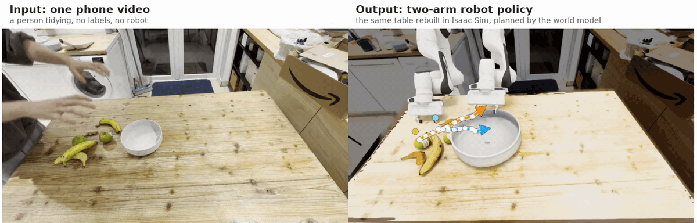
Left: the only input, one monocular phone video of me tidying, with no labels, no 3D sensors and no robot. Right: the same table rebuilt automatically in Isaac Sim, where two robot arms do the task. The world model, learned only from my phone videos, decides what each arm moves, where it goes and the path it takes (the dotted arrows); NVIDIA's lift policy does the grasp. Nothing in between was labelled or written for this task.
An automated pipeline that turns unlabelled phone videos of a person doing a task into robot policies trained in simulation.
Why I built this
My idea for this project was to build something that would actually matter for the way physical AI companies are trying to train robots right now. In my own past projects I have worked with reinforcement learning and with LLM planning for robot arms, and the same problem kept coming up: every new task needs a person to build the scene, write and tune a reward, and babysit the training. It works, but it stops at one task, because the next task needs someone to do all of it again, and that just doesn't scale to the amount of data you need to train a generalist humanoid.
So I wanted to attempt something that I knew would be a lot harder, but more rewarding and with more open problems in it: a fully automated pipeline with no human labelling and no hand tuning per task. You put in egocentric videos of people doing things, which companies are now collecting in huge amounts, and you get out policies in simulation that can adapt to new configurations of that task. If that works, every new hour of human video becomes training data for robots without anyone writing task-specific code, and the cost of teaching a robot a new task drops to the cost of recording someone doing it.
I also picked a few harder options on purpose. I went for two arms working on the same table instead of one, which means the policy also has to learn to share the space. The scope is kept quite wide on purpose: the pipeline is designed to support any task that is about moving objects to where they belong, so sorting, tidying, packing and stacking all fit, while something like pulling a lever or turning a tap would probably not work and is out of scope.
I started building this at the beginning of October 2026, and I am carrying on with it.
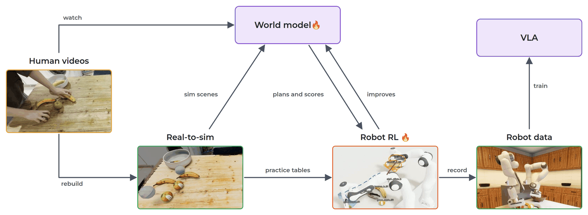
The full loop. The world model watches the human videos, the same videos are rebuilt as physics tables, and on those tables the world model plans and scores the robot's practice while RL in turn improves the world model. Nothing in it is labelled by hand or written for a specific task.
A few choices hold the whole project together. It is task-agnostic: there is no task-specific reward anywhere, and the world model provides the goals and the scores. It is fully autonomous: nobody labels anything, from cutting the videos to scoring the robot. The world model is also the planner, so it can propose plans it learned from people and then correct their physics in RL. And everything runs in NVIDIA Isaac Sim, which I have experience with and which gives photoreal rendering, GPU physics and domain randomisation for the sim-to-real step later.
1. Recording human data
I recorded 23 videos of myself tidying my kitchen table at a natural speed, 27.5 minutes in total, with nothing labelled: putting fruit into a bowl, putting tools into a toolbox among cardboard boxes and other clutter, and stacking boxes, with the objects shuffled into a new layout between attempts. The clutter is on purpose, because I wanted to test whether this could work in a less structured setting, which is one of the biggest challenges for humanoids.
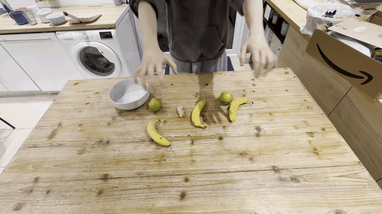 |
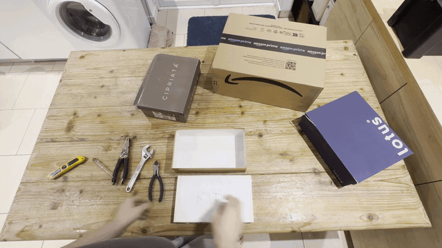 |
| Fruit into the bowl. | Tools into the toolbox. |
I wanted the whole workflow to run without human labelling, and understanding what the tasks in a video even are needs some general knowledge about the world, so I used Gemini 2.5 Flash, which has decent visual understanding, to mine the videos. It cuts long recordings into episodes, so you can feed in long human videos without anyone pressing start and stop, and for each episode it returns a generic task instruction, the objects involved and where they ended up. I kept the prompt task agnostic, so it doesn't mention fruit, tools or anything else that would lead it, and it should work on any video you give it. From the 23 videos it finds 87 episodes, 52 tasks plus the resets between them, with 26 different instructions. A second language model then reviews every cut against contact sheets of the frames and tightens the boundaries, so the episodes start when the first object starts moving and end when the last one is at rest.
2. From flat video to objects in 3D
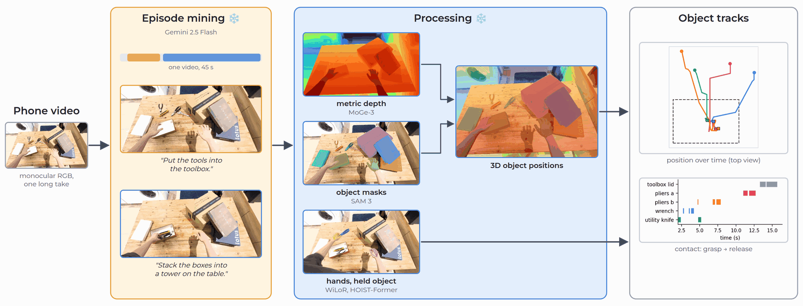
Because Gemini has already told us which objects matter in each episode, we can follow them through the video. MoGe-3 gives a metric depth map for every frame and I fit the table plane with RANSAC, which gives a table-centred frame for everything else. Qwen3-VL lists what is on the table, SAM 3 checks each name and keeps the ones it can actually find, and SAM 3's video tracking then follows every object through the episode with one identity per object, so the masks and the depth can be lifted to 3D positions over time. WiLoR fits a 3D hand to every detected hand, and published hand-object contact models (HOIST-Former and Hands23) mark which object each hand is holding, which gives the grasp and release times. The output of each episode is every object's position over time, both hands, and when each hand is in contact with each object.
3. From real video to simulation
The idea now is to recreate the real human data in simulation. That lets us expand a handful of demonstrations into many more examples of the task through domain randomisation, it gives an environment for massively parallel learning that would be far too expensive to collect in the real world, and it lets the robot learn about physics in a way you just can't get from monocular phone video. So I want to rebuild the same objects and the same environment in a simulator, and for this I use NVIDIA Isaac Sim, partly because I'm familiar with it and partly because it has a lot of what this needs: Isaac Lab for parallel RL, domain randomisation, realistic RTX rendering that will matter for closing the sim-to-real gap when training vision policies later, and of course everything runs on CUDA.
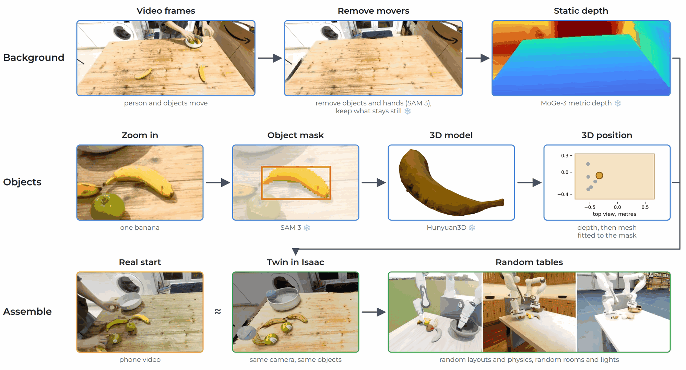
Each episode becomes its own Isaac Sim scene of my actual table at the start of that episode. The meshes come from Hunyuan3D-2.1, made once per physical object from its clearest video crop and reused across episodes, and placed where the depth and the mask say they are. Because my phone doesn't move during a recording, I didn't need Gaussian splatting for the background: for every pixel I keep the colour and depth that stay the same over the whole video, so anything that moves, including me, drops out. The twin's camera uses the phone's real pose and intrinsics so the render lines up with the video, and a twin takes about 11 seconds to build, so all of them can be rebuilt whenever the builder changes.
To check the twins I project every twin object through the real phone camera and compare it with SAM 3's mask of the same object in the real start frame. Over 183 objects in 26 fruit and tool twins the median mask overlap is 0.75 and the median centre error is 2.8 pixels out of 960, so the twin sits where the real table is.
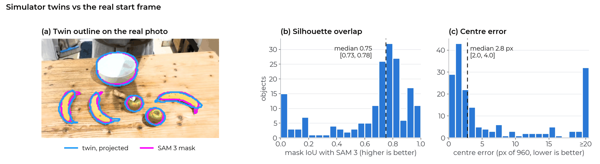
From there Isaac Sim randomises everything a real robot would meet: physics, camera position, lighting, object positions, backgrounds and textures. Each world below is drawn automatically by a seed from Isaac's own asset libraries, with nothing placed by hand, and the same demonstration plays in all of them, with my hands replaced by two robot arms that follow the 3D hands tracked from the phone video.
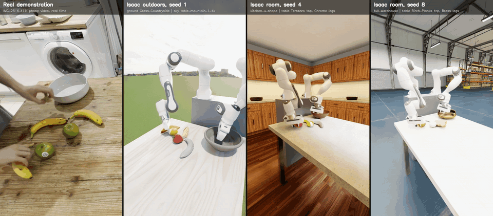
One real demonstration (left) and the same episode in three rooms drawn by a seed, with two robot arms following my tracked hands.
4. The world model
The world model is the part I spent the most time on, because it is what replaces the person who would normally write the reward. It has to look at a scene and an instruction and say which object should move next, where it should end up and how it should get there, and it has to learn all of that only from my videos.
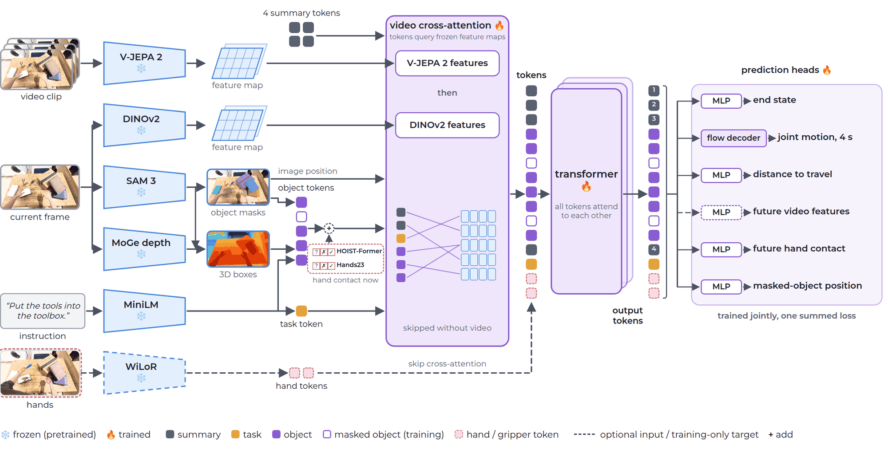
The inputs are all frozen, published models. Every object becomes a token built from its SAM 3 mask and its 3D box from MoGe depth, with its DINOv2 appearance, the instruction becomes a task token through MiniLM, the hands come from WiLoR with their contact flags, and the tokens read the V-JEPA 2 and DINOv2 feature maps of the video through cross-attention. A transformer trained from scratch lets all of these attend to each other, and six heads read the result: where every object ends up, how all of them move over the next 4 seconds (a flow-matching decoder, so it can imagine several different paths), how far each still has to travel, the future video features, future hand contact, and the position of an object that was masked out. They are trained together with one summed loss, and video is optional, so the same model runs from the 3D tokens alone when a robot has no phone video to look at.
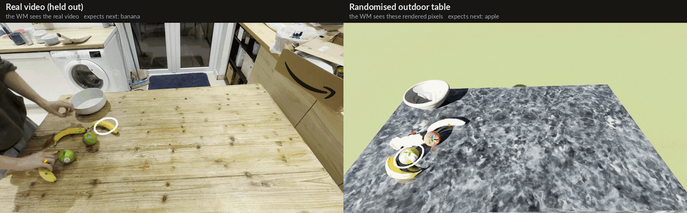
The world model watching an episode it never trained on (left), and the same moment rendered as a table it has never seen (right). Dashed: the path it predicts for the next 4 seconds; circle: where it expects the object to end; white ring: the object it expects to move next; solid: what really happened.
To evaluate it I hold out whole episodes and read the goals from the first frame alone, exactly as the robot's judge reads them, then compare them with where my hands really put each object at the end of the video.
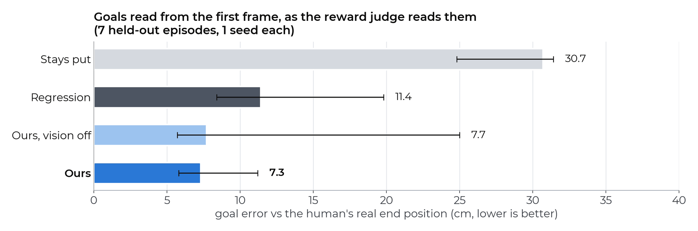
| Held-out real videos, goal error from the first frame | cm, lower is better |
|---|---|
| Object stays where it is | 30.7 |
| Direct regression on the same inputs | 11.4 |
| World model, vision off | 7.7 |
| World model | 7.3 |
The world model puts the goal within about the size of a piece of fruit of where I really put it, from a single frame of a scene it has never seen, and it is a third more accurate than a regression model trained on exactly the same data. Played back inside the episode's own twin, its plans end 7.2 cm from my real end positions.
5. Fine-tuning the world model for new worlds
My videos are all from one kitchen, so the next step was to teach the world model what stays the same when everything else changes. I fine-tuned it on 10 episodes rendered in 12 randomised worlds each, 2,100 frames, and tested it on worlds that look like nothing it has trained on.
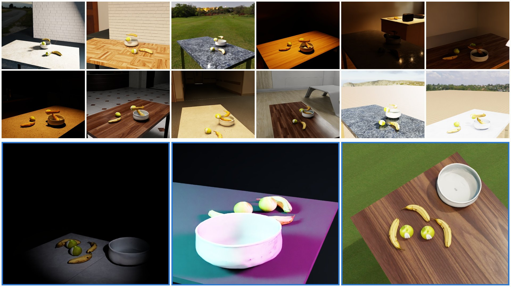
Top: the 12 training worlds. Bottom: the three held-out test worlds.
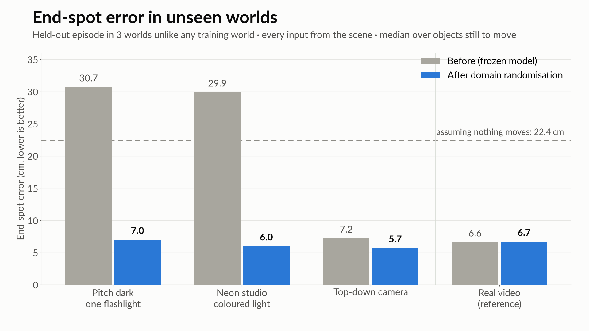
| Held-out world | Before | After fine-tuning |
|---|---|---|
| Pitch dark, one flashlight | 30.7 cm | 7.0 cm |
| Neon studio, coloured light | 29.9 cm | 6.0 cm |
| Top-down camera | 7.2 cm | 5.7 cm |
| My real video (reference) | 6.6 cm | 6.7 cm |
In the dark and neon worlds the frozen model is as lost as assuming nothing moves, and after fine-tuning it is as accurate there as on my own kitchen, while on the real video it stays exactly where it was.
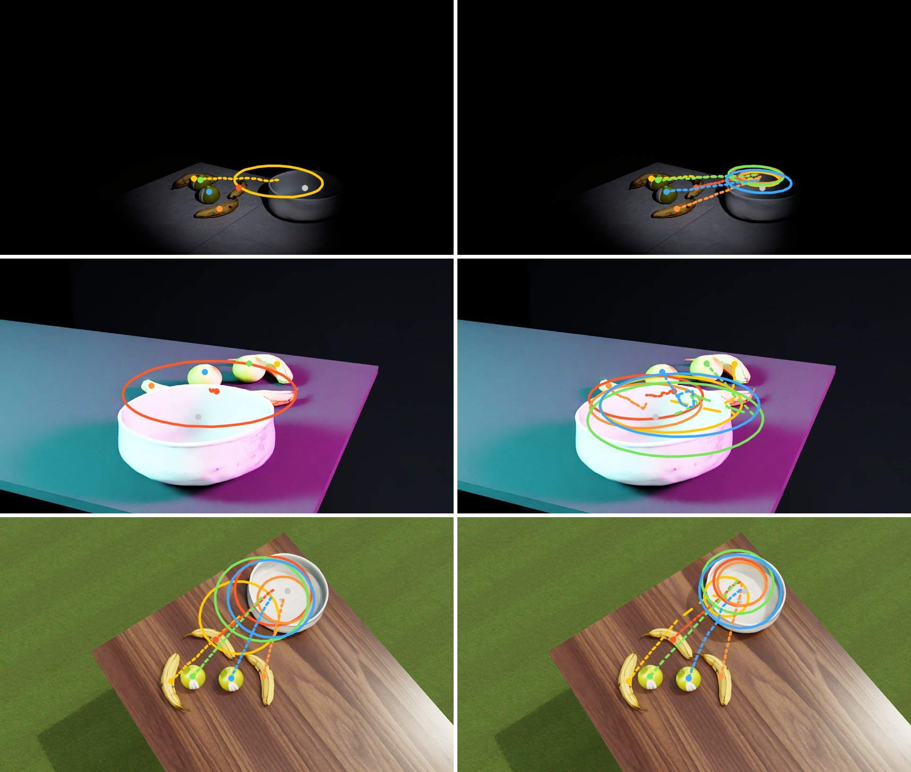
The plans the world model reads from the first frame of each held-out world, before (left) and after (right).
6. RL post-training: turning the world model into an action world model
The world model knows what a tidy table looks like and how people move things, but not what a robot can actually do. So the last stage post-trains it with reinforcement learning in physics, with two Franka arms on thousands of randomised tables, so that it becomes an action world model that plans for the robot it is driving.
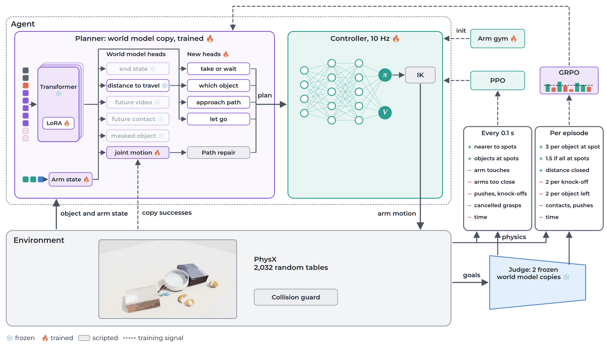
The agent has two levels. The planner is a copy of the world model with LoRA on its transformer and a few new heads: whether to start the next pick now or wait, which object, the approach path and when to let go. It also gets a new input, the arm state, because the world model learned from human video and has never seen a robot. It is trained with GRPO once per episode: several attempts at the same table are compared and the better-than-average ones are reinforced, which needs no critic and suits a large pretrained model with one score at the end. Its object-motion head keeps learning too, from the carries that succeed in physics, so its imagined paths move towards paths the arms can actually execute. Below it, one controller drives both arms ten times a second through IK and is trained with PPO on a reward every 0.1 s. The rewards come from a judge made of two frozen copies of the world model, which read every object's goal from the first frame, so there is still no task-specific reward anywhere. Training runs on 2,032 randomised PhysX tables at once on one RTX 4090.
| Held-out tables, 75 tables x 2 | Objects at their goal | Tables fully done |
|---|---|---|
| World model before RL | 10.6% | 4.0% |
| After RL post-training | 53.5% | 22.7% |
On tables it has never seen, post-training takes the robot from one object in ten to more than half of all objects at the spot the judge chose, and fully cleared tables go up more than five times.
7. Grasping with NVIDIA's lift policy
To see the plans on real grasps, I put two Franka arms on my twins with NVIDIA's pretrained Isaac Lab lift policy, which was only ever trained to lift a cube to a point in the air. Everything else comes from the frozen world model: it chooses which object each arm moves, where it goes and the path it should take, and the arm carries the object along that path and lets go at its end. The two arms check whether their predicted motions would cross and the later one gives way, a free arm takes the next object in the world model's order that it can reach and that the other arm isn't using, and nothing is trained on my side. Every object the world model chose to move, five of them, is picked up by one of the two arms, carried along the world model's path and let go in the bowl.
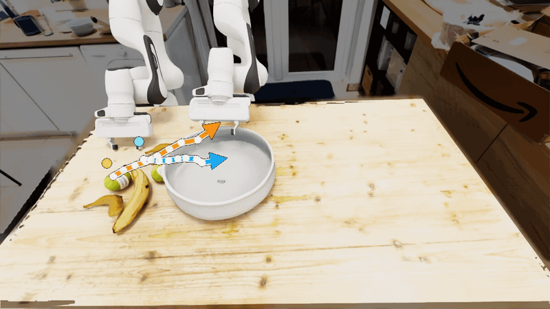
Two arms with NVIDIA's lift policy on a held-out fruit twin, following the world model's paths (the dotted arrows).
What it produces and what's next
The output is a robot policy that takes human videos and an instruction like "Put the fruit in the bowl" and works on new tables and new layouts. The same machinery is also the data engine for the next steps: the trained robot can record demonstrations for training a VLA, the world model is a backbone that can be pretrained on far more human video, and every task it learns becomes part of a demo library.
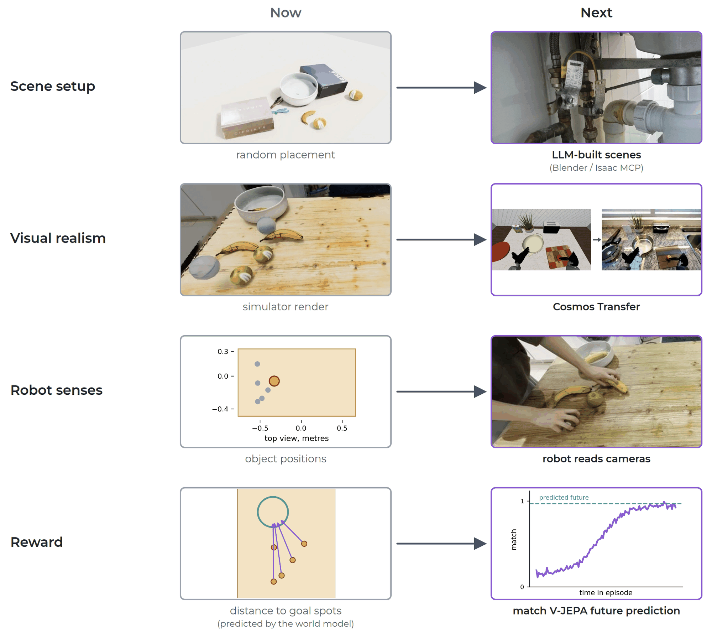
The next things I want to do are building whole scenes with an LLM instead of random placement, making the renders photoreal with Cosmos Transfer, letting the robot read its own cameras instead of object positions, and scoring progress by matching the world model's V-JEPA future prediction, which would let the same reward work for tasks that aren't about where objects end up. I will keep posting progress on the project page.
Running it
Setup and the data layout are in docs/setup.md. Each stage is one script, run in order:
source scripts/env.sh
bash scripts/1_episodes.sh # videos -> episodes with instructions (Gemini)
bash scripts/2_perception.sh data/videos/* # episodes -> 3D objects, hands and contact
bash scripts/3_twins.sh # -> one Isaac Sim twin per episode
bash scripts/4_features.sh # -> frozen V-JEPA 2 and DINOv2 features
bash scripts/5_world_model.sh # -> world model, held-out evaluation
bash scripts/6_finetune_dr.sh # -> fine-tuning on randomised worlds
bash scripts/7_rl_post_training.sh train # -> RL post-training; `eval` for the held-out table
bash scripts/8_lift_demo.sh IMG_2516_t14 # -> two arms with NVIDIA's lift policy
cleantables/
episodes/ cutting videos into episodes with Gemini
perception/ depth, table frame, SAM 3 tracking, hands, contact, 6D poses, 3D tracks
features/ frozen V-JEPA 2 and DINOv2 features, randomised renders for them
twin/ meshes, background plates, Isaac Sim twins, randomised worlds, twin evaluation
worldmodel/ data, model, training, evaluation, physics checks, fine-tuning, rollouts
rl/ parallel PhysX tables, the world-model planner, the two-arm controller, GRPO + PPO
robots/ Franka kinematics and NVIDIA's lift policies as plain torch modules
demos/ two arms with NVIDIA's lift policy following the world model
configs/ settings behind the results
scripts/ one script per stage
Ideas borrowed from other work
| Idea | Where it's from | Used for |
|---|---|---|
| Self-supervised video features | V-JEPA 2 (Assran et al., 2025) | world-model video input and future-feature target |
| Flow matching | Lipman et al., 2023 | imagined object motion |
| Masked prediction | MAE (He et al., 2022) | masked-object position head |
| Modality dropout | ModDrop (Neverova et al., 2015) | running the world model on 3D alone |
| Domain randomisation | Tobin et al., 2017 | randomised worlds, layouts and physics |
| Group-relative policy optimisation | GRPO (Shao et al., 2024) | training the world-model planner |
| Proximal policy optimisation | PPO (Schulman et al., 2017) | training the two-arm controller |
| Low-rank adaptation | LoRA (Hu et al., 2022) | post-training the world model's transformer |
| Self-imitation | Oh et al., 2018 | the object-motion head copying successful carries |
| Prioritised motion coordination | Erdmann & Lozano-Pérez, 1987 | two arms giving way to each other |
Built with
| Component | Used for |
|---|---|
| Isaac Sim 6.1 and Isaac Lab 3 (NVIDIA) | twins, physics, rendering, RL environments |
Isaac-Lift-Franka policy (NVIDIA) |
grasping in the lift demo |
| V-JEPA 2, SAM 3, DINOv2 (Meta) | video features, masks and tracking, appearance |
| MoGe-3 (Microsoft) | metric depth |
| WiLoR, HOIST-Former, Hands23 | 3D hands and hand-object contact |
| FoundationPose (NVIDIA) | 6D object poses |
| Qwen3-VL (Alibaba), Gemini 2.5 Flash (Google) | object listing, episode mining |
| Hunyuan3D-2.1 (Tencent) | object meshes |
| MiniLM | instruction and name embeddings |
License
The code in this repository is MIT licensed. Third-party models and assets keep their own licences.